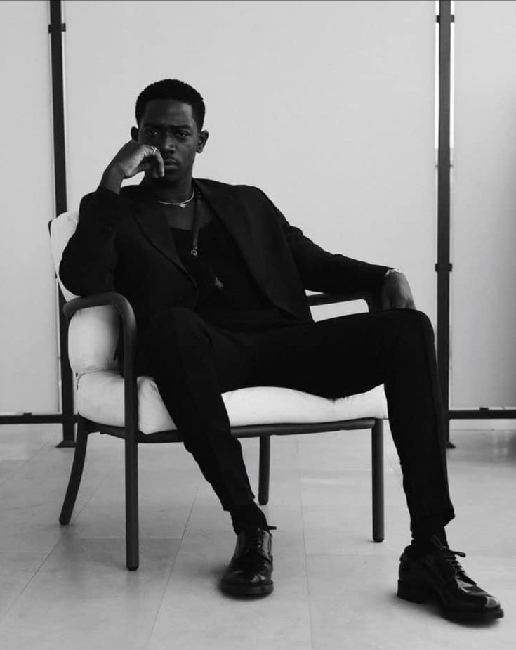
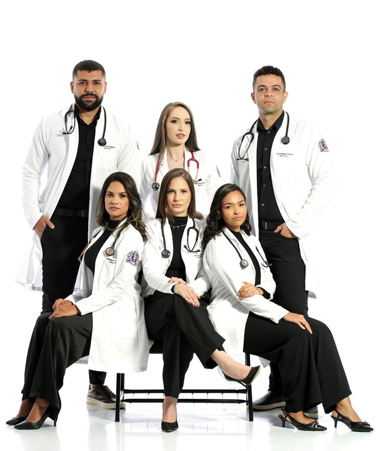
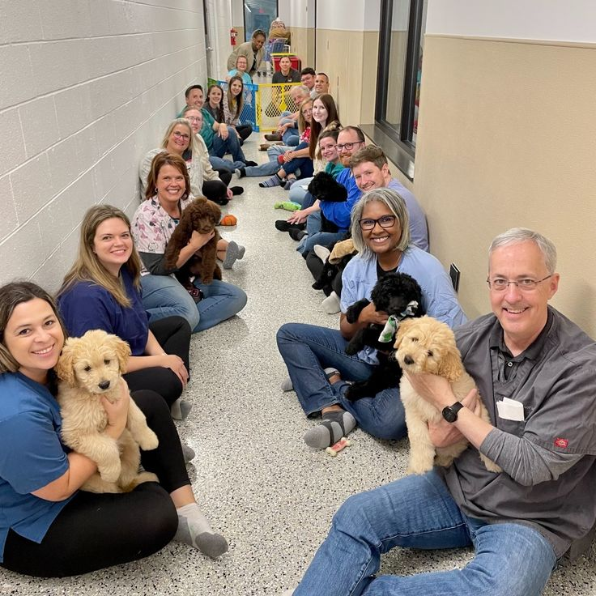

About Durban Paws Rescue
Our History
Durban Paws Rescue was founded in 2018 by a small group of volunteers who were concerned about the growing number of stray and abandoned dogs and cats in communities around Durban. What started as informal foster care from a handful of homes has since grown into a structured foster-based rescue network, supported by donations, adoption fees, and community sponsorships.
Mission
To reduce animal suffering in Durban and surrounding communities through rescue, rehabilitation, and responsible rehoming, while promoting sterilisation and humane education.
Vision
A Durban where no companion animal is abandoned, neglected, or euthanised due to overpopulation.
Our Team
-

Founder & Rescue Coordinator
Oversees intake, foster placement, and partnerships with local veterinary clinics.
-

Volunteer Veterinary Lead
Coordinates sterilisation drives and manages veterinary care for animals in foster.
-

Adoptions Coordinator
Screens applications and manages the matching of animals with adoptive families.
Our Work in Pictures
Select a photo to see it larger. In the viewer, use the arrow keys to move between photos and Escape to close.


Help us do more
Read about our adoption, foster and sterilisation services or send an enquiry today.